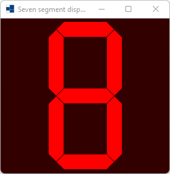
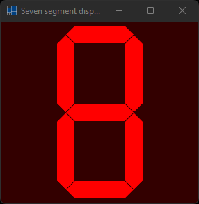
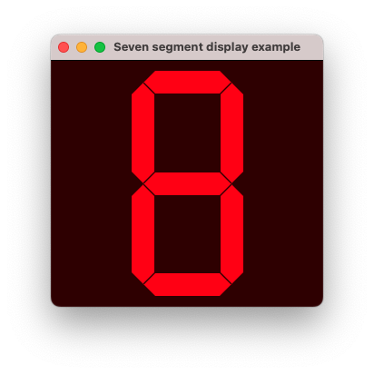
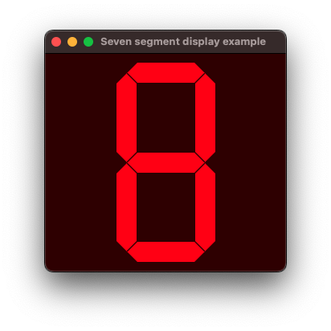
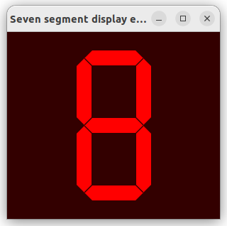
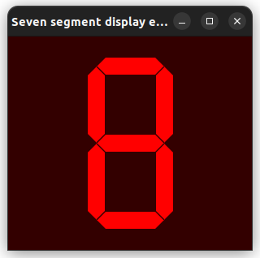

|
xtd
0.2.0
|
seven_segment_display.cpp
demonstrates how to use xtd::forms::seven_segment_display control.
- Windows
- 

- macOS
- 

- Gnome
- 

#include <xtd/forms/Application>
#include <xtd/forms/form>
#include <xtd/forms/seven_segment_display>
#include <xtd/forms/timer>
using namespace std;
using namespace xtd;
using namespace xtd::drawing;
using namespace xtd::forms;
public:
form1() {
seven_segment_display1.height(250);
seven_segment_display1.location({(client_size().width() - seven_segment_display1.width()) / 2, (client_size().height() - seven_segment_display1.height()) / 2});
seven_segment_display1.parent(*this);
seven_segment_display1.fore_color(color::red);
seven_segment_display1.anchor(anchor_styles::top | anchor_styles::bottom);
timer1.interval(300_ms);
timer1.enabled(true);
timer1.tick += [&] {
seven_segment_display1.segment_style(segment_styles[(counter / chase.size()) % segment_styles.size()]);
};
back_color(color::average(color::black, seven_segment_display1.fore_color(), 0.20));
text("Seven segment display example");
resize += [&] {
seven_segment_display1.left((client_size().width() - seven_segment_display1.width()) / 2);
};
}
private:
int counter = 0;
vector<segments> chase = {
segments::none,
segments::a,
segments::a | segments::b,
segments::a | segments::b | segments::c,
segments::a | segments::b | segments::c | segments::d,
segments::a | segments::b | segments::c | segments::d | segments::e,
segments::a | segments::b | segments::c | segments::d | segments::e | segments::f,
segments::a | segments::b | segments::c | segments::d | segments::e | segments::f | segments::g,
segments::dp,
segments::pc
};
vector<segment_style> segment_styles = {
segment_style::standard,
segment_style::modern,
segment_style::mixed,
segment_style::expanded,
segment_style::design,
segment_style::stick
};
seven_segment_display seven_segment_display1;
timer timer1;
};
auto main()->int {
application::run(form1 {});
}
std::optional< xtd::forms::style_sheets::length > height() const noexcept override
Gets the height of the box.
xtd::forms::style_sheets::control form
The form data allows you to specify the box of a form control.
Definition: form.h:21
@ chase
Defines a chase unit. Relative to width of the "0" (zero).
@ text
The xtd::forms::status_bar_panel displays text in the standard font.
The xtd::drawing namespace provides access to GDI+ basic graphics functionality. More advanced functi...
Definition: actions_system_images.h:11
The xtd::forms namespace contains classes for creating Windows-based applications that take full adva...
Definition: about_box.h:13
The xtd namespace contains all fundamental classes to access Hardware, Os, System,...
Definition: system_report.h:17
Generated on Sun Oct 1 2023 07:46:00 for xtd by Gammasoft. All rights reserved.